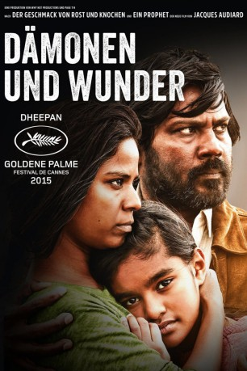

#3883 Dämonen und Wunder - Dheepan
 
 IMDB-Wertung: 7.2 / 10
IMDB-Wertung: 7.2 / 10  Metascore: 0
Metascore: 0 
Die Rebellen der Tamil Tigers haben ihr Ziel eines von Sri Lanka unabhängigen Staates nicht erreicht. Sie wurden besiegt. Um in Frankreich bessere Chancen auf Asyl zu haben, schließt sich Dheepan (Jesuthasan Antonythasan), einer der unterlegenen Soldaten, mit der jungen Frau Yalini (Kalieaswari Srinivasan) und dem Waisenmädchen Illayaal (Claudine Vinasithamby) zusammen – das Trio behauptet gegenüber den Behörden, eine Familie zu sein. So gelingt den Flüchtlingen in einer Sozialbausiedlung am Pariser Stadtrand der Start in ein neues Leben. Dheepan kümmert sich als Hausmeister um mehrere Häuserblocks, Yalini wird Betreuerin des alleinstehenden, dementen Habib (Faouzi Bensaïdi) und Illayaal besucht eine Schule. Aber bald merken die Neuankömmlinge, dass Paris fast genauso gefährlich ist wie ihre Heimat. Drogendealer haben die Gegend im Griff…
Jahr: 2015
Dauer: 114 Minuten
FSK: 16
Land: Frankreich Studio: Weltkino FilmverleihTonspuren:
Untertitel: Deutsch,
Auflösung: 1080p (1920x808) Größe: 5181 MB
Genre: Drama, Krimi
Regisseur: Jacques Audiard
Drehbuch: Roger Bohbot
Soundtrack:
Darsteller:
- Jesuthasan Antonythasan als Dheepan
- Kalieaswari Srinivasan als Yalini
- Claudine Vinasithamby als Illayaal
 Vincent Rottiers als Brahim
Vincent Rottiers als Brahim Marc Zinga als Youssouf
Marc Zinga als Youssouf- Jean-Baptiste Pouilloux als Le juriste au foyer
- Alexandre Michel als L'employé Pole-Emploi
- Faouzi Bensaïdi als Monsieur Habib
- Bass Dhem als Azziz
- Franck Falise als Le gardien du Hall C
- Joséphine de Meaux als La directrice de l'école
- Nathan Anthonypillai als L'interprète
- Vasanth Selvam als Colonel Cheran
- Kartik Krishnan als Le faussaire au Sri Lanka
- Rudhra als La femme du camp de réfugié
- Tassadit Mandi als La dame dans l'escalier
- Marie Trichet als La jeune femme chez M. Habib
- Tarik Lamli als Résident du Pré
- Joël Boudjelta als Résident du Pré
- Moussa Belhamar als Résident du Pré
- Akim Chir als Résident du Pré
- Sandor Funtek als Gardien
 Aymen Saïdi als Gardien
Aymen Saïdi als Gardien- Soufiane Guerrab als Gardien
- Keasavan Paramasamy als Vendeur de roses
- Suthagar Shanmugalingam als Vendeur de roses
- Thurainesan Thurasingham als Vendeur de roses
- Jegan Sivarasa als Invité pique-nique
- Kopiraj Shanmuganathan als Invité pique-nique
- Kanagaratham Subakaran als Invité pique-nique
- Manickam Paramanathan als Invité pique-nique
- Sinnaruthai Manoharan als Invité pique-nique
- Eric Douré als Le faussaire pakistanais
- Jana Bittnerova als La résidente anniversaire
- Jean-Michel Correia als Le facteur
Datei: X:\2015(A-F)\Dämonen und Wunder - Dheepan (2015, FSK16, 1920x808).mkv seit 27.06.2016
Festplatte: HD 2015(A-Z)
 Es gibt insgesamt 143 Filme in der Gruppe '2015(A-F)'
Es gibt insgesamt 143 Filme in der Gruppe '2015(A-F)'